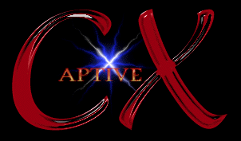

| CaptiveX | release: VB Warez | |||
|  | ||||
| www | #CaptiveX | nfo | ||
CaptiveX needs someone to keep track of our members' releases... Please talk to daP, ghi, SiraX, or any other senior if you can do this... For now, just look at the topic in our channel ;) |
CaptiveX continues to grow in size... We now have 70 members and we are being more widely recognized each day. Currently, we are devoting our time and resources on the CaptiveX Universal Recruitment Division (cX-RD). As it develops, you will hear more about it here on scenelink. |
We would like to welcome all of our new members, and thank both our members and scenelink for their support. We are looking for new people to work on the cX-RD, so please contact us if you are interested. |
What can we say? CaptiveX is up and ready to make the scene a more qualified place to be. |
Stay tuned for the new Universal Recruitment Division. We all KNOW you will think it rocks. And NO, we didn't steal the name CaptiveX from NCompass Labs... I'll bet THEY stole it from US ;) |